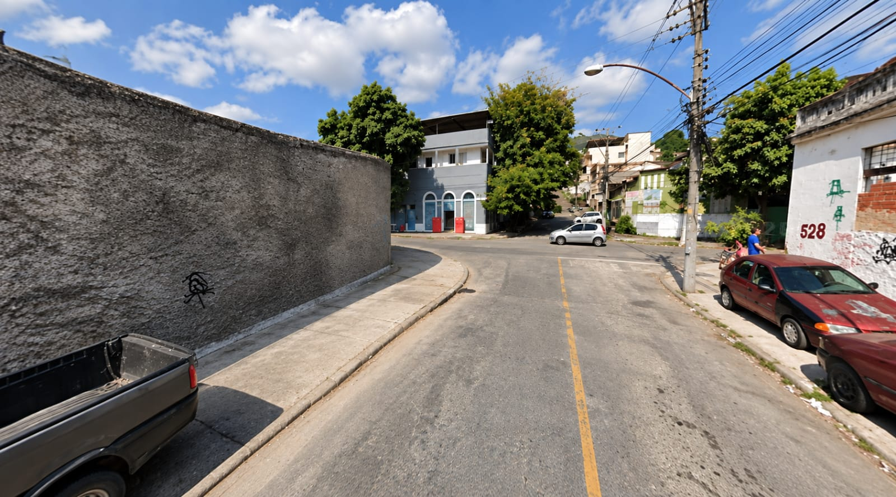
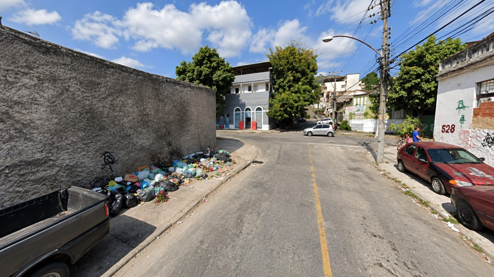

<!DOCTYPE html>
<html lang="pt-BR">
<head>
    <meta charset="UTF-8">
    <meta name="viewport" content="width=device-width, initial-scale=1.0">
    <title>Recicla Água Santa</title>
    
    <link rel="icon" type="image/png" href="logo-pino.png">
    
    <link rel="preconnect" href="https://fonts.googleapis.com">
    <link rel="preconnect" href="https://fonts.gstatic.com" crossorigin>
    <link href="https://fonts.googleapis.com/css2?family=Inter:wght@400;500&family=Manrope:wght@700&family=Sora:wght@800&display=swap" rel="stylesheet">
    <link rel="stylesheet" href="style.css">
    <link rel="manifest" href="manifest.json">
    <meta name="theme-color" content="#03300b">
    <link rel="apple-touch-icon" href="logo-pino.png">
</head>
<body class="pagina-interna text-page">
</head>
<body>
    <script>
      if ('serviceWorker' in navigator) {
        window.addEventListener('load', () => {
          navigator.serviceWorker.register('/sw.js')
            .then(reg => console.log('Service Worker registrado!'))
            .catch(err => console.log('Erro no Service Worker', err));
        });
      }
    </script>
</body>
</html>

    <div class="primeira-dobra">
        
        <nav class="navbar">
            <h1 class="marca">
                RE<span class="custom-c">C</span>ICLA<br>
                ÁGUA SANTA
            </h1>
        </nav>

<main class="conteudo-principal">
            
            <section class="slider-container">
                <div class="imagem-comparacao">
                    <div class="slider-camada camada-fundo">
                        
                        <div class="overlay-texto">O LUGAR QUE PODEMOS TER</div>
                    </div>
                    
                    <div class="slider-camada camada-frente" id="img-frente">
                        
                        <div class="overlay-texto">O LUGAR QUE TEMOS</div>
                    </div>
                    
                    <input type="range" min="0" max="100" value="50" id="slider" class="slider-controle">
                    
                    <div class="linha-divisoria" id="linha">
                        <div class="setas">
                            <svg width="18" height="18" viewBox="0 0 24 24" fill="none" stroke="currentColor" stroke-width="3" stroke-linecap="round" stroke-linejoin="round">
                                <path d="M9 18l-6-6 6-6M15 18l6-6-6-6"/>
                            </svg>
                        </div>
                    </div>
                    
                    <div class="badge-instrucao">Deslize para o lado</div>
                </div>
            </section>

            <section class="textos">
                <h2>O destino do lixo transforma o lugar onde se&nbsp;vive.</h2>
                <p>A cada ano, nota-se uma piora no clima: tempestades, vendavais e calor extremo. Tudo isso está diretamente ligado ao descarte de lixo incorreto. Aprender a descartar adequadamente o resíduo é o primeiro passo para fazer a&nbsp;diferença.</p>
            </section>

            <section class="botoes-acao">
                <a href="busca.html" class="btn-principal">Quero descartar um material &rarr;</a>
                <a href="conscientizacao.html" class="btn-secundario">Aprenda a reciclar</a>
            </section>

        </main>

    </div>

    <script>
        const controleSlider = document.getElementById('slider');
        const imgFrente = document.getElementById('img-frente');
        const linhaDivisoria = document.getElementById('linha');

        // A nova mágica: usando clip-path para mascarar a imagem da frente
        controleSlider.addEventListener('input', (e) => {
            const valor = e.target.value;
            const corteDireita = 100 - valor;
            
            // Recorta a imagem da direita para a esquerda
            imgFrente.style.clipPath = `inset(0 ${corteDireita}% 0 0)`;
            linhaDivisoria.style.left = valor + "%";
        });
    </script>
</body>
</html>